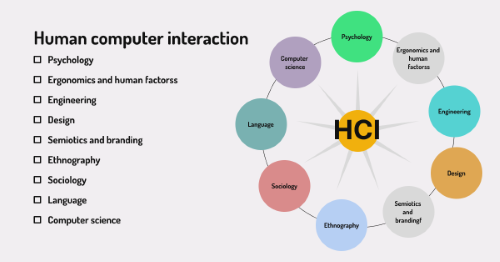
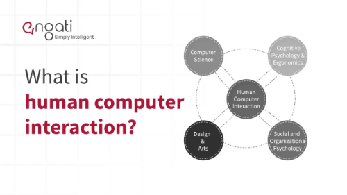
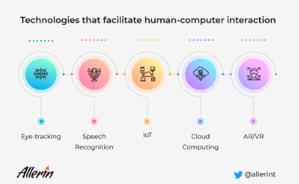
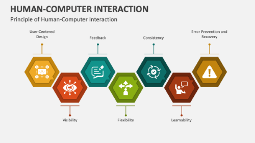

Welcome to the HCI Course
This course will cover the fundamentals of Human Computer Interaction, including elements, attributes, and how it is important.
What is HCI?
Human-Computer Interaction (HCI) is the study and design of the interaction between people and computers. It focuses on understanding how users interact with technology and aims to improve the usability, accessibility, and overall user experience of computer systems and applications. HCI combines principles from computer science, design, psychology, and social sciences to create user-friendly interfaces and enhance the effectiveness of technology in meeting human needs.
HCI is inherently interdisciplinary, integrating knowledge from psychology, ergonomics, engineering, design, ethnography, sociology, and language to create systems that are not only functional but also enhance the overall user experience. By understanding the interplay between these fields, HCI practitioners can design technology that is more intuitive, accessible, and aligned with human needs and behaviors.
Advancements in technologies such as eye tracking, speech recognition, IoT, cloud computing, and AR/VR significantly enhance Human-Computer Interaction by making it more intuitive, efficient, and engaging. These innovations facilitate seamless communication between users and devices, improve accessibility, and create immersive experiences, ultimately leading to a more user-centered approach in technology design. As HCI continues to evolve, these technologies will play a crucial role in shaping the future of how we interact with digital systems.
The principles of Human-Computer Interaction (HCI) are essential guidelines that inform the design and evaluation of user interfaces. These principles emphasize usability, ensuring that systems are easy to learn and efficient to use. User-centered design is crucial, involving users throughout the development process to align technology with their needs and preferences. Consistency in design elements helps users predict interactions, while clear feedback provides timely information about their actions. Affordance in design suggests how users can interact with elements, enhancing intuitiveness. Accessibility ensures that systems are usable by individuals of diverse abilities, promoting inclusivity. Finally, error prevention and recovery mechanisms are vital for minimizing user mistakes and facilitating easy correction. By adhering to these principles, HCI aims to create effective, efficient, and enjoyable interactions between users and technology.
